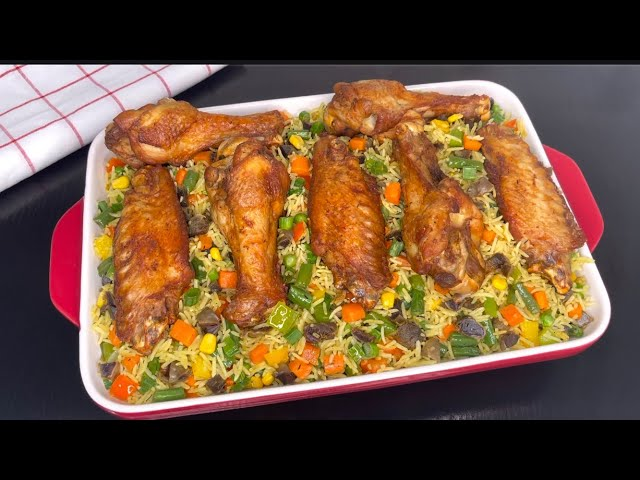
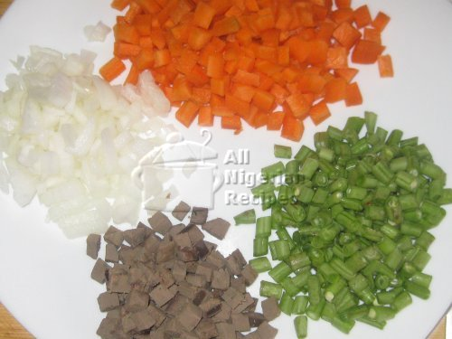

Nigerian Fried Rice & Honey Glazed Turkey
A delicious and vibrant one-pot meal, Nigerian Fried Rice is a festive staple
that pairs perfectly with succulent, sweet, and savory Honey Glazed Turkey.
This recipe is a celebration of rich flavors and textures.

Recipe Information
- Prep time: 45 minutes
- Cook time: 1 hour 15 minutes
- Servings: 7 people
- Difficulty: Intermediate
Ingredients
For the Fried Rice:
- 3 cups long-grain rice, parboiled
- 1 large onion, chopped
- 1 cup mixed vegetables (carrots, green peas, sweetcorn)
- 1/2 cup spring onions, chopped
- 1 tablespoon curry powder
- 1 teaspoon thyme
- 3 tablespoons soy sauce
- 1/2 cup vegetable oil
- Salt and pepper
For the Honey Glazed Turkey:
- 4 kg turkey wings or drumsticks
- 1/4 cup honey
- 2 tablespoons soy sauce
- 1 tablespoon vegetable oil
- 1 teaspoon paprika
- 1/2 teaspoon garlic powder
- Salt
Instructions
-
Prepare the Turkey: Season the turkey with salt, paprika,
and garlic powder. In a small bowl, mix honey and soy sauce.
-
Cook the Turkey: Heat oil in a pan and brown the turkey
pieces. Pour the honey-soy sauce mixture over the turkey and simmer on low
heat until the turkey is cooked through and the sauce is a thick glaze.
-
Prepare the Rice: Boil the rice until soft and set aside.
-
Cook the Fried Rice: Heat oil in a large pan or wok. Stir-fry
the onions until translucent.

-
Add the mixed vegetables and stir-fry for 2-3
minutes.
Combine and Finish: Add the parboiled rice to the pan.
Sprinkle in the curry powder, thyme, and soy sauce. Stir continuously until
the rice is evenly coated and heated through. Finally, stir in the spring
onions, carrots and others.
Serve: Plate the Nigerian fried rice and serve with the
honey glazed turkey pieces on the side.
Tips
For a richer flavor, you can use chicken or beef broth to cook the rice.
Ensure the rice is completely cooled before frying to prevent it from clumping
together. You can also add some scrambled eggs for extra protein.
Source: All Nigerian Recipes